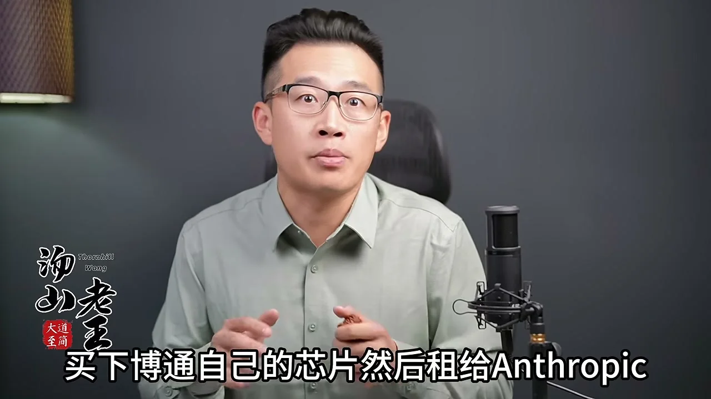
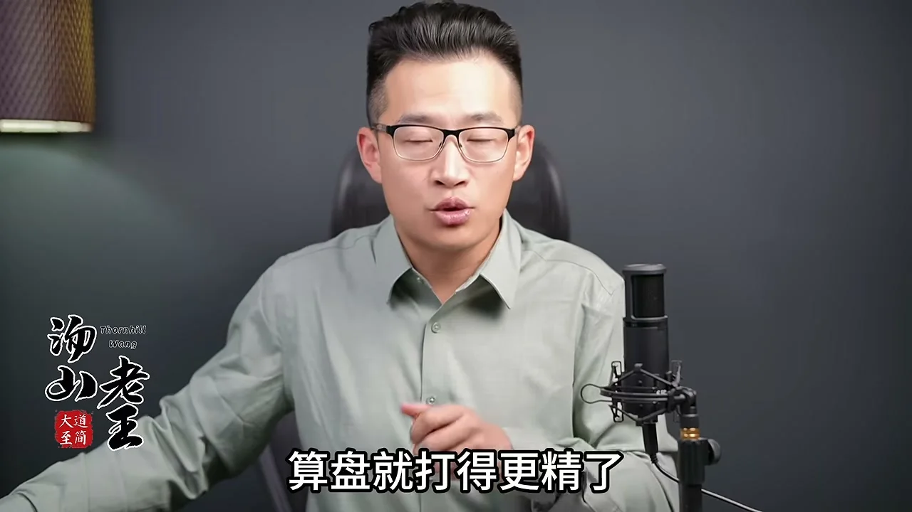
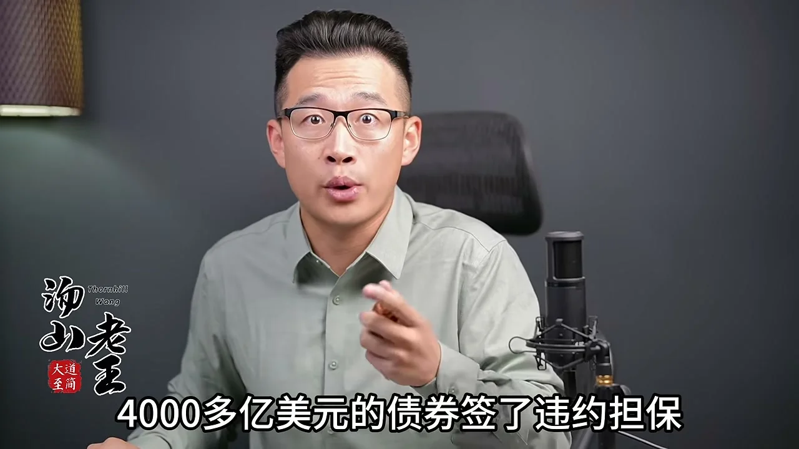
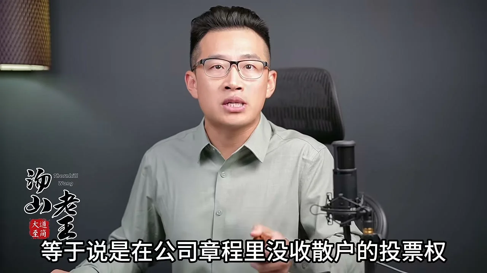
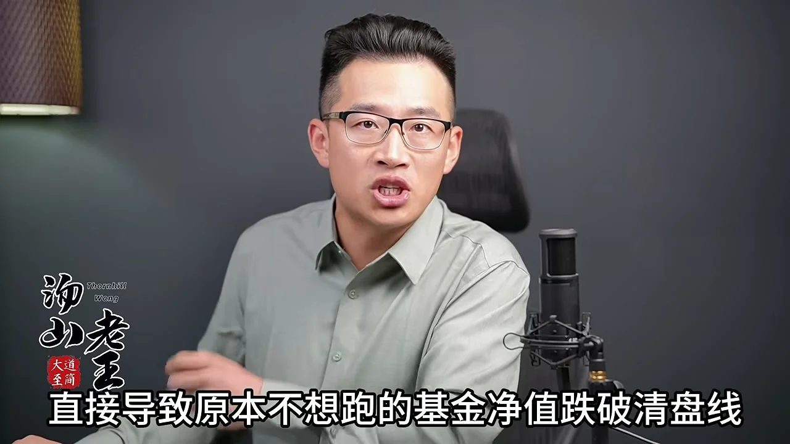
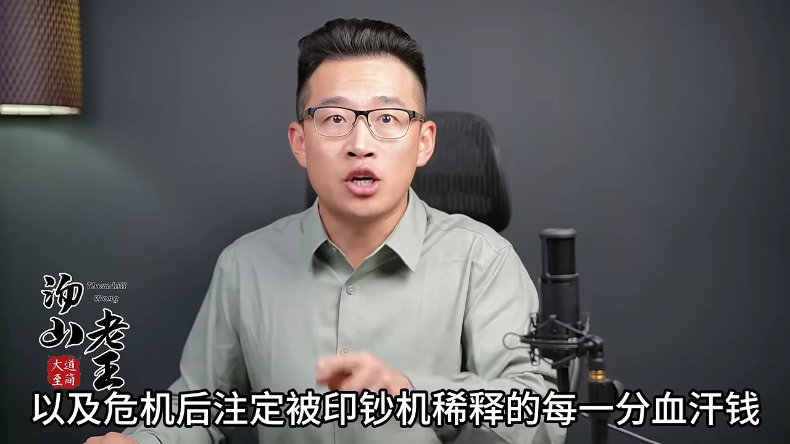

开篇：五个关键数字
博通 SPV 空壳融资
630 亿美元
美银/花旗/大摩优先贷 + 黑石次级债，残值由博通担保
Meta 股权融资
950 亿美元
含最高 600 亿美元无投票权 C 类股
Anthropic 未来最低付款义务
4,170 亿美元
绝大部分不可撤销，最长跨越 20 年
亚马逊 2026Q1 账面收益
168 亿美元
全部来自 Anthropic 估值上涨的投资收益
Meta 未来支出承诺
8,250 亿美元
7 月以来从 7,000 亿飙升至此
水面下的算力债
数万亿美元
硅谷三年 AI 军备竞赛买入，仍以原价记在账上
2026 年 10 月末，全球科技股上演惨烈崩盘：美国昔日芯片霸主单日暴跌 30%，头部科技巨头一天蒸发 3 万多亿人民币市值，纳斯达克一个月蒸发上万亿美元；A 股主要科技指数距前期高点腰斩，惨烈堪比 2015 股灾。但原片的判断是：金融风暴还没开始——眼下只是股市（皮肉）在流血，真正要命的债市（筋骨）和金融机构（心肺）还没出事。本报告基于原片全文转写整理，观点归属原片。
一、解剖现代金融体系：皮肉、筋骨与心肺
原片借用《乱世华尔街》的比喻：现代金融体系是一个人的身体——股票市场是最外层的皮肉，债权市场（银行贷款与各类债券）是支撑全身的筋骨，控制全社会资金流动的金融机构是心脏肺腑。这个解剖决定了冲击的传导顺序：
- 股票是皮肉：股票代表企业所有权，发出去无需赎回，企业没有还本付息义务；股价跌八成理论上也不影响公司运作。买股票的人本就有亏钱准备，杠杆通常不高，高杠杆的银行更不会拿身家性命进股市下重注。所以单纯股市大跌，对企业、投资者、银行三方的直接冲击都有限——「顶多算蹭破了点皮肉」。
- 债市是筋骨：绝大多数债务有严格的还本付息规定，借钱人一旦违约当场构成破产清算，还会引发银行对本来没事的企业抽贷。债市买单的主力——保险公司、养老基金、传统商业银行、私募信贷与影子银行——全是靠借短放长吃利差活命的高杠杆机构。债务违约伤到筋骨，亏损顺着杠杆与踩踏放大，直接扎进心脏肺腑。
- 金融机构是心肺：银行借贷杠杆是撑起整个金融市场的钢梁，健康债市是拖住钢梁的地基。地基一塌，全身体系瞬间完蛋。
「今天大家看到的惨状还只是股票这层皮肉在流血，而硅谷过去三年为了搞 AI 军备竞赛，已经在水面之下买好了数万亿美元的债务，并把华尔街各大商业银行和影子银行都死死绑在了上面。」
二、同一天甩出的三份文件
就在科技股暴跌的前夜，硅谷在同一天甩出三份文件——原片将其视为「抢跑接盘的信号」：
| 主体 | 动作 | 关键结构 |
|---|
| Anthropic | 向 SEC 递交招股说明书 | 带着 4,500 亿美元不可撤销的算力采购承诺上市 |
| 博通 | 联合美银、花旗、摩根士丹利、黑石成立 630 亿美元空壳公司（SPV） | SPV 买下博通自己的芯片再租给 Anthropic；博通对芯片未来跌价损失提供残值担保 |
| Meta | 宣布 950 亿美元罕见股权融资 | 含最高 600 亿美元无投票权 C 类股票；表态认购 50 亿美元的偏偏是给它卖芯片的英伟达、AMD 和博通 |
三份文件指向同一个动作：趁着债市还没爆、公众还陷在「生怕错过 AI 时代」的焦虑里，赶紧把独角兽推向 IPO、把巨头新股发出去，用股民不用还本付息的钱，去置换华尔街即将到期的债务。
背景 美联储 9 月重启加息，市面借钱利息极高，且银行不愿接受贬值极快的芯片作抵押品——Anthropic 很难借到便宜的钱
博通的焦虑 华尔街给博通的万亿市值定价，建立在「每季度 AI 芯片收入高速增长」的预期上；大客户一旦没钱，下季度生意断档、股价完蛋
SPV 方案 债务出表：Anthropic 账上不用记 630 亿美元贷款；银行拿到芯片厂保底承诺；博通当期锁死 630 亿大单收入，消息公布当天盘前涨超 3%
原片的评价 「如果一件事看起来全都是好处，那它肯定就是一个骗局」——成败完全取决于三年后 Anthropic 能否足额还钱，以及还不上时博通能否履约

▲ 原片 03:32 截图：博通签字承担这批芯片未来的跌价损失，为 SPV 贷款提供残值担保。
三、左脚踩右脚的记账魔术
三份文件之外，是更深的交叉缠绕。原片用「魔幻辈分」概括当前硅谷关系：亚马逊估计持有 Anthropic 15%–20% 股份、谷歌持有 10%–15%，两家云巨头既是其大股东、又是其最大债主，还是其经销商——控制了 Anthropic 约 48% 的销售额和 60% 的应收账款；更讽刺的是，谷歌 Gemini 与亚马逊的自研模型同时是 Anthropic 的直接竞争对手。
「我是你的股东，你是我的债主；我替你卖货，你跟我抢单；你中有我，我中有你，咱们既是亲家也是仇家。」——同一笔钱根本不出谷歌的大院：以入股名义打给 Anthropic，Anthropic 转头以买算力名义全额付回云部门，两边财报各自多出 100 亿美元营收，华尔街按几十倍估值涨几千亿市值，Anthropic 因算力规模翻倍估值跟着暴涨。亚马逊 2026 年一季度就靠 Anthropic 估值上涨在财报里记入 168 亿美元投资收益。26 年前互联网泡沫时干这事叫「对倒做假账」，今天叫「AI 生态闭环」。
债务侧的数字同样惊人：2025 年底以来 Anthropic 签下 4,170 亿美元未来最低付款义务且绝大部分不可撤销——其中应付谷歌 1,110 亿美元、应付亚马逊 AWS 1,100 亿美元。原片将其比作三国演义里的连环计：庞统献计用大铁锁把战船一艘接一艘锁死，表面如履平地；今天硅谷的芯片商、云巨头、大模型独角兽、华尔街商业银行、私募信贷与影子银行，同样用 SPV 空壳、残值担保、交叉认购和不可撤销租约绑在一起——一切就绪，只欠东风。
四、下游真实买单能力：比想象中薄弱得多
撑起这座万亿美元连环船的下游真实买单能力，原片用一组数据说明其薄弱：
- 2026 年上半年，Anthropic 仅算力和基础设施开支就花掉 89.45 亿美元，直接吃掉 55% 的营业收入；
- 三季度营收环比增速已从二季度的 100% 以上掉到 45%；
- 其引以为傲的财富 500 强客户，采购金额平均还不到这些大企业同期 IT 支出的 0.1%，且大客户多数没有签长期合同；
- 用不确定性极强的收入，去填补 4,500 亿美元不可撤销、最长跨越 20 年的刚性算力租约债务——「这笔账连普通老百姓都能算出凶险」。
那么精明的投行家、科技巨头 CFO 看不出来吗？原片的回答是：他们明知道船要下沉，也已经下不去了。
五、囚徒困境：为什么没人敢停手
疫情以来全球主要经济体为纾困与化解主权债务滥发货币，市场上钱泛滥到了极点。在老百姓眼里，手握大把现金眼睁睁看别人赚钱，比自己赔钱还难受——这是错失恐惧症（FOMO）的根源；而在金融机构与科技巨头内部，这种焦虑演变成谁也不敢停手的囚徒困境：
- 基金经理：若因看清泡沫而把客户的钱存银行保本，只要市场还在涨，客户立刻赎回资金让你失业——「今年泡沫会不会破裂不知道，但今年一定会失业。」于是只能抱团取暖。
- 科技巨头：谁现在敢为优化报表稍微放慢买显卡的脚步，当天就会被资本市场判定「失去未来」。在流动性洪流里，拥抱流动性是唯一的办法，独自清醒的代价就是立刻出局。
- 投行家：只要今天把 630 亿 SPV 搭起来、把 Anthropic 送上纳斯达克、把 Meta 的 950 亿新股发出去，今年圣诞节前几亿美元承销费和奖金就实实在在揣进兜里——「身处盛世中的华尔街精英，很少有人在意明年的风险，因为明年还未必在这家银行干。」
- 签残值担保的企业高管：在美股期权考核制度下，高管身家挂钩每季度营收增速与股价。今天不签担保，SPV 借不到钱、630 亿订单无法确认、股价大跌；今天签了字，订单入账、股价上涨、期权迅速行权变现。至于三年后万一赔钱——「那是三年后的事，最后一个承诺永远是唯一可以不遵守的承诺。」

▲ 原片 12:08 截图：在美股期权考核制度之下，高管身家挂钩的是每个季度的营收增速和股价。
朗讯前传：把公司推下悬崖的人拿走了 550 万遣散费
原片翻出 26 年前的教科书案例作对照。2000 年互联网泡沫顶峰时，朗讯科技是全球最大通信设备商之一，市值一度突破 2,500 亿美元。当年下游电信运营商现金流枯竭买不起设备，朗讯 CEO 理查德·麦克金（Richard McGinn）为保住每季度营收增长考核，向 Winstar 等根本还不起钱的企业提供了数十亿美元供应商融资与退货担保，甚至季度末签署对倒合同虚增收入。2001 年下游运营商开始排队破产，担保瞬间变成巨额坏账砸回朗讯头上：连续 10 个季度亏损、裁员 11 万人、股价从 80 多美元跌到不足 1 美元。最讽刺的是结局——把公司推下悬崖的 CEO 被解雇时拿走 550 万美元现金遣散费，董事会还免除了他个人欠公司的 400 多万美元贷款；干了不到一年的 CFO 离职时也拿走 330 万美元补偿，唯一条件是签一份「不在外人面前说朗讯坏话」的保密协议。「收益个人化，债务社会化，在哪都一样。」
| 2000 年朗讯 | 2026 年 AI 连环船 |
|---|
| 倒不下的理由 | 保住每季度营收增长考核 | 保住万亿市值与「AI 叙事」估值 |
| 工具 | 供应商融资、退货担保、对倒合同 | SPV 空壳、残值担保、交叉认购、不可撤销租约 |
| 抵押物 | 两年内过时的通信设备 | 两年半丧失竞争力的算力芯片 |
| 报表效果 | 垃圾合同变优质收入 | 高息次级债变符合大行风控标准的优质抵押品 |
| 结局预告 | 10 个季度亏损、股价 80→1 美元 | 「明知船要下沉也下不去了」 |
六、死亡螺旋：从股票到债市的自动引爆链
原片强调：在现代华尔街的金融机器里，从股票崩盘到债市爆雷再到股票更猛烈的崩盘，不需要等人反应过来，而是写死在会计准则和合同条款里的自动死循环。机制分四步：
- 第一步：交叉持股反噬。上涨时巨头交叉持股是印钞机（你给我刷估值、我给你贡献百亿账面利润）；一旦科技股暴跌，按美国现行会计准则，交叉持股的巨头必须在当季财报同步计提百亿级公允价值损失——股价下跌直接变成利润表上的业绩血崩，甚至当场触发债券信用评级下调。
- 第二步：追保条款夺命。华尔街所有表外担保与衍生品合同里都藏着一道与股价和信用评级挂钩的夺命闸门。2008 年 AIG 替华尔街 4,000 多亿美元债券签了违约担保，平时顶着 3A 评级一分钱押金不用交；2008 年 9 月股价暴跌 50%，评级机构当天下午调低评级，直接触发硬性追保条款——AIG 必须在 24 小时内掏出 180 亿美元现金补交抵押品，否则当场破产。这和今天博通替 630 亿美元 SPV 签下残值担保是同一回事：平时你好我好，一旦股价暴跌触发评级松动，银行会按合同强制要求提前补交百亿美元级现金押金，直接把万亿巨头的现金流当场抽干。
- 第三步：秃鹫围猎。闻着血腥味的对冲基金一面在股市疯狂做空，一面在债市大量买入信用违约掉期（CDS）。就在芯片霸主单日暴跌 30% 的同时，其五年期 CDS 直接飙上历史极值。因为在大行风控系统里，交易对手的股价与违约保费是绑在一起的两条生死线——只要把股价砸穿、把违约保费买爆，全华尔街银行的风控系统当天下午就会自动报警，把该公司拉进限制交易黑名单，停止一切短期拆借。2008 年雷曼破产后的第三天，连高盛和摩根士丹利都是被对冲基金用这套「做空股票+买爆 CDS」的组合逼进断贷黑名单，股价两天狂泄，最后逼得英美证监会紧急「掀桌子」宣布禁止做空，才捡回一条命。
- 第四步：输血管道掐断。在银行和影子银行眼里，一家科技公司的市值与股市再融资能力，就是保住债主本金的最后一层安全垫——只要还能发股票圈到钱，就不怕你还不上债。可一旦股市这条输血管道被掐断（正是这两天在发生的事），二级市场投资人自己在科技股里血肉模糊，谁还有钱敢接上千亿美元的新股和 IPO？旁边的债权人就会一夜之间惊醒：到期这上万亿美元的算力租约和芯片贷款，根本没人替自己担保。

▲ 原片 17:00 截图：平时 AIG 市值高、顶着 3A 最高评级，按合同一分钱押金都不用交——股价与评级就是所有担保合同的隐形抵押品。
Meta 的 950 亿融资里还藏着一个治理细节：最高 600 亿美元无投票权 C 类股，叠加 Anthropic 创始人锁死 50.1% 投票权的治理结构，等于在公司章程里没收了散户的投票权——「车可以散户来买，但散户的手不能碰方向盘一下。」

▲ 原片 15:02 截图：无投票权 C 类股等于在公司章程里没收了散户的投票权。
2000 年互联网泡沫是同一剧本的预演：当年纳斯达克先暴跌，大家以为只是皮肉伤，但它直接掐断了电信运营商在股市增发圈钱的通道；2001 年借不到新钱的电信商排队债务违约，大火瞬间从股市皮肉烧进债市筋骨，引爆把朗讯科技和华尔街信贷彻底扎穿的大海啸。「今天我们正站在一个一模一样的转折点上——股票的暴跌已经发生，但债市的清算甚至还没有开始。」
七、商场着火了：财富幻觉与流动性踩踏
从债市表面风平浪静到流动性瞬间清零，往往只需要第一个被吓破胆的债主开始抢跑。平时 SPV 里的芯片资产、云厂商表外租约、结构化算力债券二级市场交易并不活跃，只要没人公开甩卖，大家都可以按模型估价记账——就像 2007 年夏天之前，所有投行手里的 CDO 有毒资产都按原价记在账上。这层窗户纸只要不捅破，抵押品就不打折，借新还旧的「信仰之跃」就能一直玩下去。直到当年美林证券开始公开拍卖贝尔斯登抵押的房贷债券，维持债市体面的窗户纸被当场捅破。
「财富幻觉」的商场比喻：平日商场里几千上万个顾客在各楼层随机闲逛，大门看起来宽敞无比；可一旦有人喊了一声「着火了」并拔腿往外跑，哪怕火苗只是角落烧着一块窗帘，几千上万人也会同时朝唯一的出口狂奔。绝大多数资产的价格，只是一种「所有人同时相信别人不会跑」时才存在的共识——并不是说市面上真的有那么多钱来支撑它们的价值。
- 先抢跑的机构把算力债和科技股价格砸下去 → 直接砸破本不想跑的基金净值清盘线 → 触发程序化止损被迫跟着抛售；
- 手里的垃圾算力债券彻底找不到买家时，为凑出每日结算必须缴纳的救命现金，机构只能不计成本抛售流动性最好的资产——科技巨头股票、债券、甚至黄金；
- 这就解释了为什么美股科技股暴跌的同时，连避险的黄金白银都在盘中跟着大幅跳水。

▲ 原片 21:16 截图：先抢跑的机构砸盘，直接导致原本不想跑的基金净值跌破清盘线，触发程序化止损而被迫跟着抛售。
为什么万里之外、没有美元债的中国科技股和硬件厂商也会第一时间跟着腰斩？原片的产业链比喻：硅谷巨头是借着高息垃圾债发疯的「总包工头」，下游的算力二房东和硬件制造厂商是跟着超额订单拼命买设备扩产的「施工队」。当总包工头在股市里连散户的钱都圈不到、债市筋骨眼看崩断时，施工队手里看似已赚到的账面利润，未必能兑换成未来发给股东的真金白银。
八、普通人的位置：船舱底层的压舱石
很多人觉得算力债爆雷亏的只是美国银行、花旗、黑石的钱，与原片观众无关。答案藏在一个问题里：黑石和影子银行拿去买 630 亿 SPV 高息次级债的钱是从哪来的？——超过一半来自全世界的养老基金、退休金、保险公司保单池，以及被层层包装成「稳健固收理财」卖给普通家庭的血汗钱。
2008 年雷曼破产那天，华尔街交易对手们把雷曼账上值钱的优质抵押品瓜分干净，只留下一堆一块钱只赔几分钱的无担保垃圾债，最后全砸在退休基金、货币基金和买银行理财的普通市民手里。届时各国央行为给银行这颗心脏「搭桥」，凭空印出几万亿美元钞票，最终全部转化为席卷全球的信用货币大贬值，由全世界每一个领死工资的普通人分摊。

▲ 原片 23:44 截图：船头喝香槟的是拿走百亿期权和奖金的硅谷高管与华尔街精英；火哨联营那一刻，被锁在船舱底层当压舱石、被大火包围跑不出去的，永远是普通人的养老钱保命钱。
原片的收尾引《道德经》：「天之道，损有余而补不足；人之道，损不足以奉有余。」在 SPV 担保与交叉认购锁死的铁锁连环船上，结构决定位置，位置决定结局。
对产业与 IT 决策的启示
- 警惕「供应商融资」式收入质量：朗讯当年用担保与对倒合同做高收入，今天芯片商为买家 SPV 担保残值——任何「客户没钱、供应商垫资」的循环交易，收入越漂亮越要拆开看现金流。评估 AI 供应商与合作伙伴时，应收账款质量、表外承诺、关联采购三条线必须穿透。
- 算力资产按「快速折旧品」定价：视频的核心假设是算力芯片两年半丧失竞争力。企业自建/长租算力（含多年期不可撤销合同）时，合同期限不应超过技术代际寿命，残值担保条款要明确对手方履约能力。
- 黄金与避险资产同步跳水是警报而非异常：流动性危机的踩踏顺序是先卖能卖的——当避险资产跟跌，说明市场已从「定价风险」进入「抢现金」阶段。企业财务的流动性缓冲、IT 预算的刚性/弹性拆分要按这个场景做压力测试。
- 「生态闭环」叙事需要第三方收入验证：巨头互持股份、互买算力、互认收入的闭环里，生态内部每多循环一次，真实外部收入就稀释一次。判断 AI 赛道泡沫程度，盯住第三方付费渗透率（如财富 500 客户采购占其 IT 支出的比例）比盯住融资额更可靠。
- 激励结构决定行为，制度设计先于道德判断：从评级机构到投行家到期权高管，无人觉得自己在作恶——只是制度让他们理性地做了合力危险的事。企业内部推 AI 落地同样如此：考核什么，团队就优化什么；给创新项目设计考核时，先问「这个指标会不会诱导团队自己给自己刷收入」。
来源与说明
- 原片：汤山老王《AI 投资正在重演 08 年次贷危机！全球资产暴跌，但这只是刚刚开始》（2026-10-31，24:09，26.1 万播放 / 3,656 赞 / 474 评论）
- 原片引用书籍：《乱世华尔街》（Barton Biggs 体系的市场结构比喻）；历史案例：2000 年互联网泡沫与朗讯科技、2008 年 AIG 违约担保与雷曼破产、贝尔斯登与 Merrill Lynch 抵押品拍卖
- 本页图表均为原片视频截图（已标注时间点），正文经本地 Whisper 转写后人工整理，专名已校正（Anthropic、博通、Meta、AIG、CDS、SPV、Richard McGinn 等），数据为原片口径，未经独立审计核验
- 文中市场数据与危机推演均为原片观点及其引用来源的转述，本页不构成任何投资建议，仅供研究参考